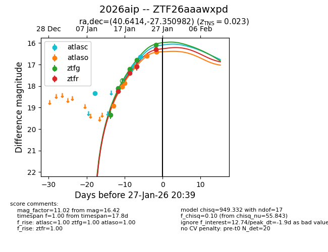
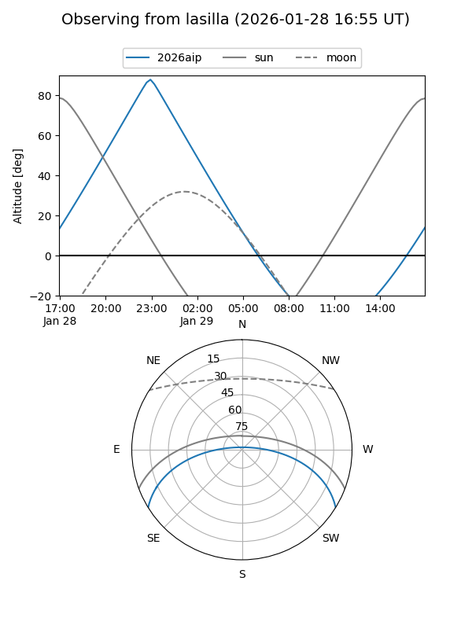
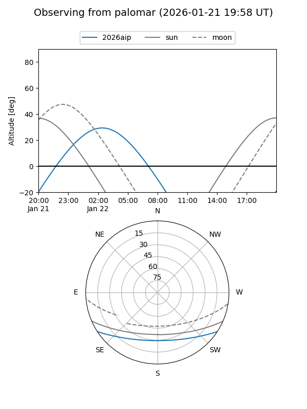
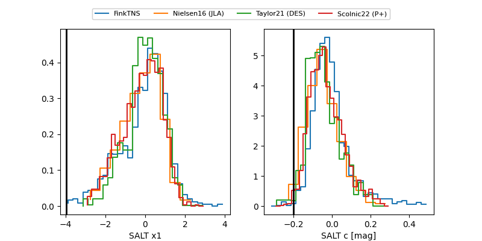

2026aip
Target 2026aip at 2026-01-24 19:46
Aliases and brokers:
FINK: link
Lasair: link
ALeRCE: link
TNS: link
YSE: link
alt names
ZTF26aaawxpd (ztf,fink_ztf)
2026aip (tns,yse)
Coordinates:
equatorial (ra, dec) = 40.6414,-27.35098
equatorial (HMS+DMS) = 02:42:33.94,-27:21:03.54
galactic (l, b) = (219.8966,-65.34972)
Flags:
Photometry:
last ztfg=16.79, ztfr=17.09
4 ztfg, 3 ztfr detections
Lightcurve

Visibility


Additional plots
